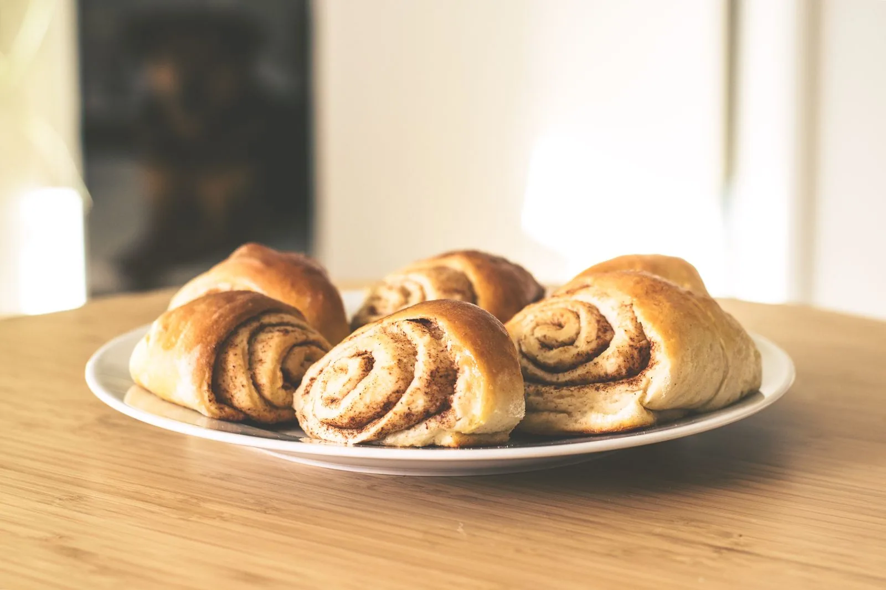
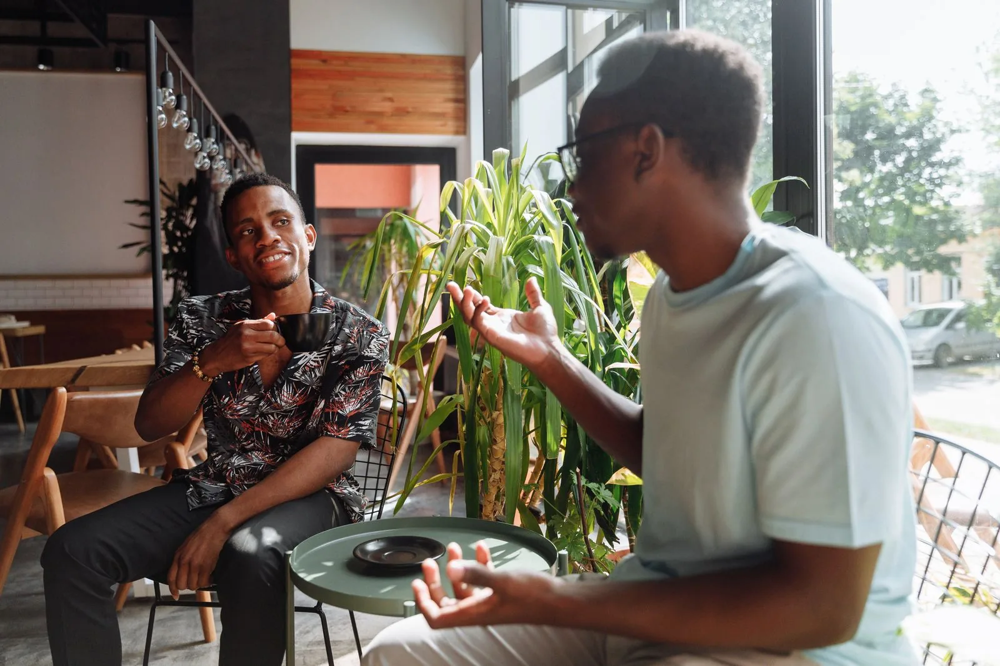

01 / Our story
More than a cafe. A common ground.
Common Ground Bakery & Cafe is a gathering place first and a bakery second. Regulars know each other by name, neighbours linger over a second cup, and the room fills with the easy talk of a small town that likes being together.
“To bring people together to meet the relational, spiritual, and material needs of individuals and families in their communities.”
— The mission of Common Ground Bakery & Cafe
That mission shows up beyond the counter too — in the community garden, in coat drives, and in the Fall Block Party that brings hundreds of residents and visitors downtown.
See what the community gets up to